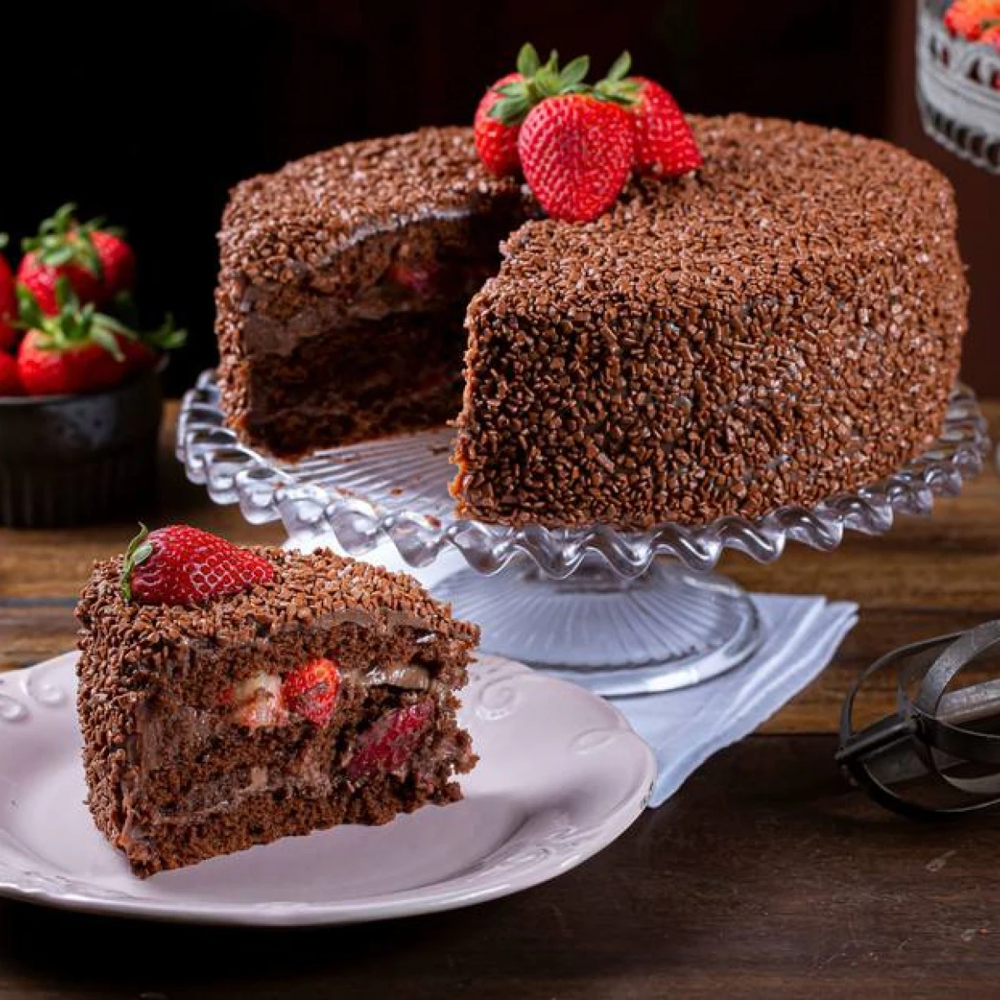
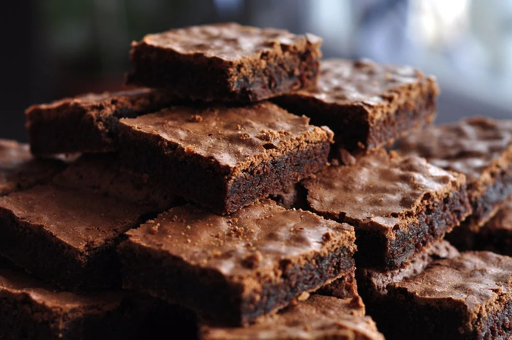

Receitas da Bia
Página inicial
https://claudia.abril.com.br/cozinha/gastronomia/receitas-de-liquidificador-faceis-salgados-doces/
Bolo de chocolate

https://www.estadao.com.br/paladar/receita/bolo-de-chocolate-com-morango/
Ingredientes:
4 ovos
4 colheres de sopa de chocolate em pó
2 colheres de sopa de manteiga ou margarina
3 xicaras de farinha de trigo
1 xicara de leite
Preparo:
Em um liquidificador adicione os ovos, o chocolate em pó, a manteiga, a farinha de trigo, o açúcar e o leite, depois bata por 5 minutos.
Adicione o fermento e misture com uma espátula delicadamente.
Em uma forma untada, despeje a massa e asse em forno médio (180 ºC) preaquecido por cerca de 40 minutos. Não se esqueça de usar uma forma alta para essa receita: como leva duas colheres de fermento, ela cresce bastante! Outra solução pode ser colocar apenas uma colher de fermento e manter a sua receita em uma forma pequena.
Brownie

https://www.tudogostoso.com.br/receita/306823-brownie-simples-e-rapido.html
Ingredientes:
4 ovos
2 xícaras de achocolatado em pó
1 xícara de farinha de trigo
200 gramas de manteiga
Preparo:
Em uma tigela, coloque os ovos, o açúcar e bata com a ajuda de um fouet ou garfo
Em seguida, adicione a manteiga e o achocolatado em pó
Misture tudo e depois adicione a farinha de trigo
Mexa a massa até que fique homogênea
Depois, despeje a massa em uma forma untada com achocolatado em pó
Leve para assar em forno preaquecido a 180 graus Celsius por 35 minutos